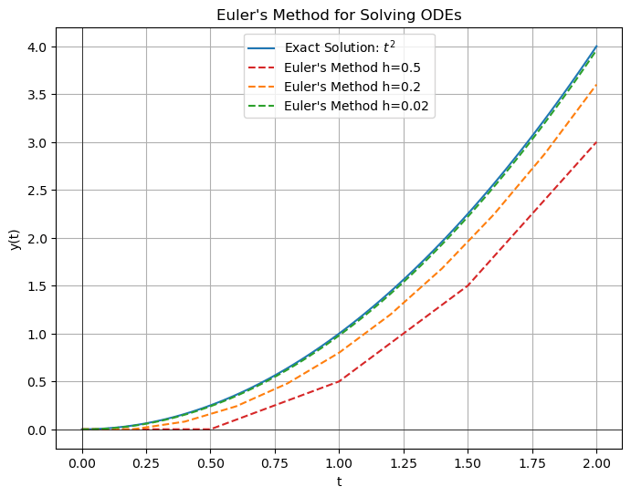
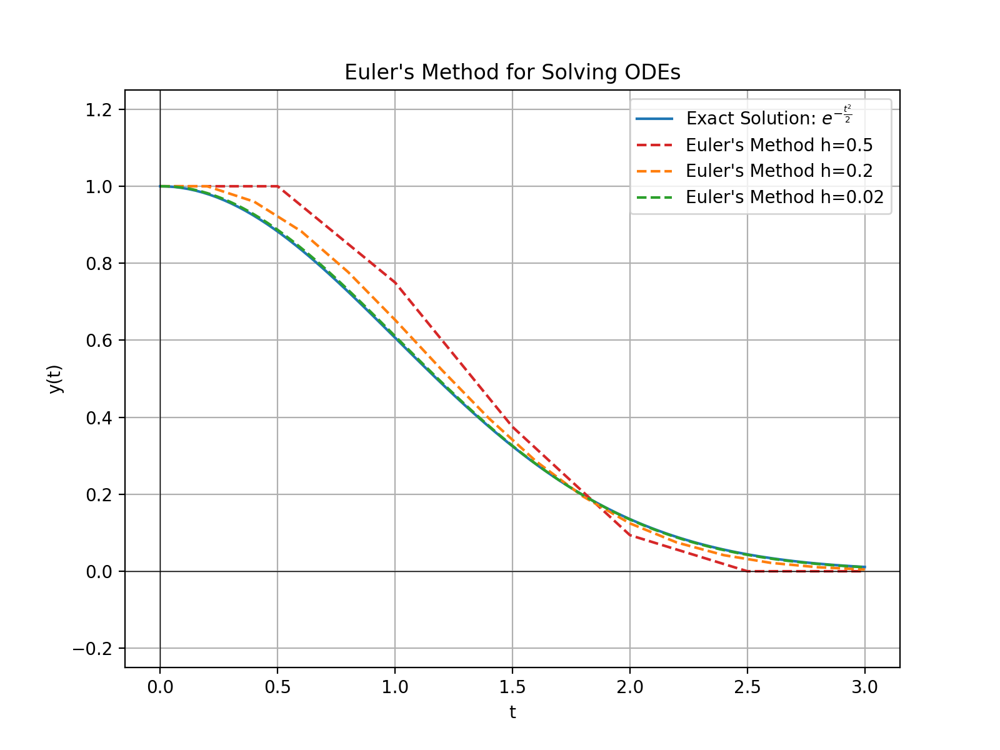
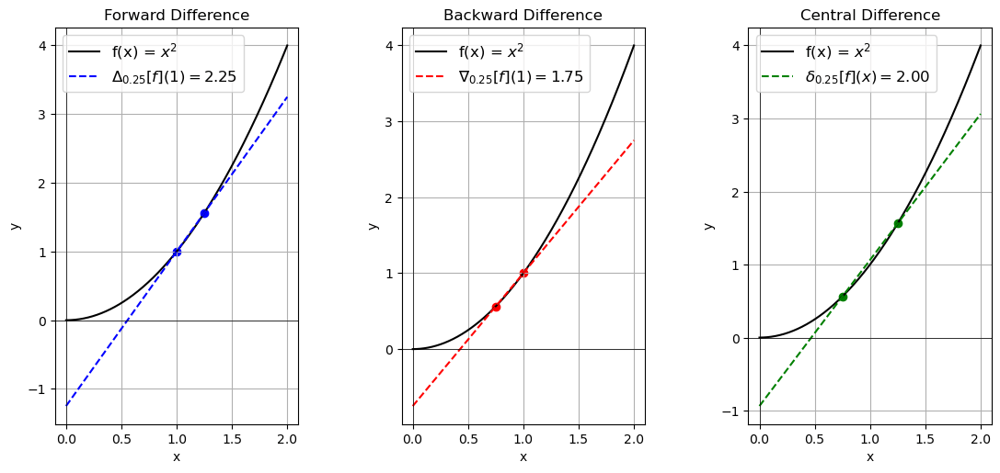
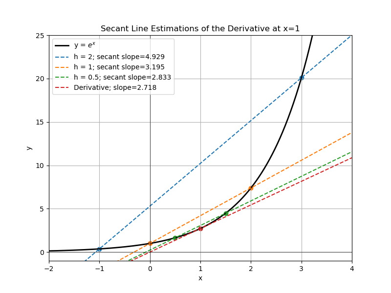
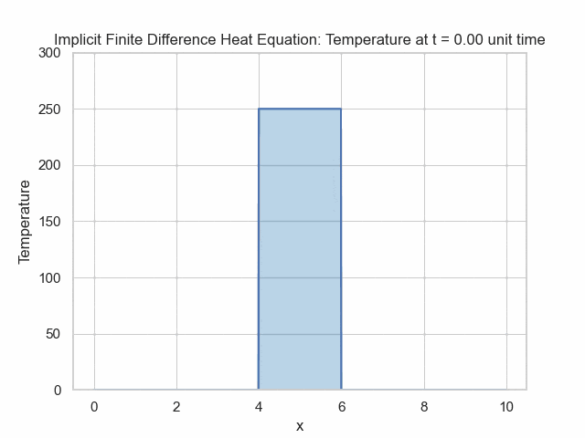
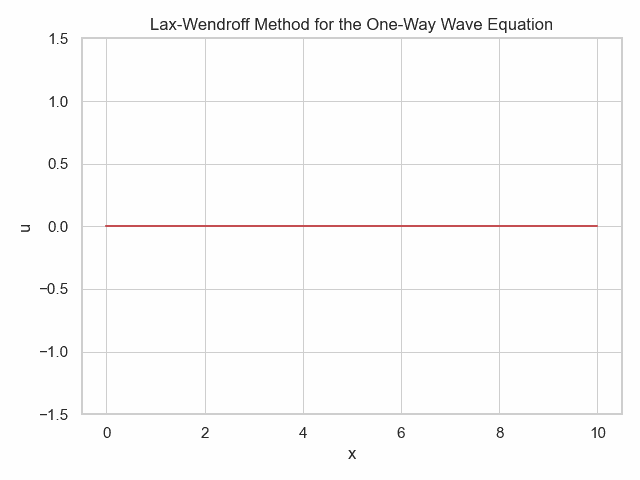

In practice, many PDEs do not have closed-form solutions. Finite difference methods (FDM) are numerical techniques used to approximate the solutions of partial differential equations (PDEs). By discretizing the domain into a finite number of grid points, FDM translates continuous PDEs into a system of algebraic equations.
Simpler Models
Euler Method
The Euler method is a simple way for solving an ordinary differential equation (ODE).
If we are given the differential equation, we attempt to numerically solve it by taking small steps.
$$y_{n+1}=y_n+hf(t_n,y_n)$$
Taylor Expansion
For a function, f, we can write the value of the function at a nearby point through a Taylor series.
$$y(t_0+h)=y(t_0)=hy'(t_0)+\frac{1}{2}h^2y''(t_0)+\dots$$
Using this formula, we can attempt to determine the path followed given initial conditions by repeatedly taking small steps of size h.
Example
We shall consider the simple differential equation
$$y'=2t$$
with initial condition
$$y(0)=0$$

import numpy as np
import matplotlib.pyplot as plt
import seaborn as sns
sns.set_theme(style="whitegrid")
def euler_method(f, y0, t):
y = np.zeros(t.shape)
y[0] = y0
dt = t[1] - t[0]
for n in range(0, len(t)-1):
y[n+1] = y[n] + dt * f(t[n], y[n])
return y
# Differential equation
f = lambda t, y: 2 * t
exact_solution = lambda t: t ** 2
t = np.linspace(0, 2, 100) # Time values
y_exact = exact_solution(t)
y_euler = euler_method(f, 0, t)
# Plot
plt.figure(figsize=(8,6))
plt.plot(t, y_exact, label="Exact Solution: $t^{2}$", color='tab:blue')
colors = ['tab:red','tab:orange','tab:green']
for i,n in enumerate([5,11,101]):
t = np.linspace(0, 2, n) # Time values
y_euler = euler_method(f, 0, t)
plt.plot(t, y_euler, label=f"Euler's Method h={2/(n-1)}", linestyle='--', color=colors[i])
#plt.plot(t, y_euler, label="Euler's Method", linestyle='--', color='red')
plt.title("Euler's Method for Solving ODEs")
plt.xlabel('t')
plt.ylabel('y(t)')
plt.legend()
plt.grid(True)
plt.show()
More complicated example
We can also include values of the function itself in the differential equation.
$$y'(t)=-t\times y(t)$$
with initial condition
$$y(0)=1$$

import numpy as np
import matplotlib.pyplot as plt
import seaborn as sns
#sns.set_theme(style="whitegrid")
def euler_method(f, y0, t):
y = np.zeros(t.shape)
y[0] = y0
dt = t[1] - t[0]
for n in range(0, len(t)-1):
y[n+1] = y[n] + dt * f(t[n], y[n])
return y
# Differential equation
f = lambda t, y: -(1*t)*y
exact_solution = lambda t: np.exp(-0.5*t**2)
t = np.linspace(0, 3, 100) # Time values
y_exact = exact_solution(t)
y_euler = euler_method(f, 1, t)
# Plot
plt.figure(figsize=(8,6))
plt.plot(t, y_exact, label=r"Exact Solution: $\frac{1}{\sqrt{2\pi}}e^{-\frac{t^2}{2}}$", color='tab:blue')
colors = ['tab:red','tab:orange','tab:green']
for i,n in enumerate([5,11,101]):
t = np.linspace(0, 3, n) # Time values
y_euler = euler_method(f, 1, t)
plt.plot(t, y_euler, label=f"Euler's Method h={2/(n-1)}", linestyle='--', color=colors[i])
#plt.plot(t, y_euler, label="Euler's Method", linestyle='--', color='red')
plt.title("Euler's Method for Solving ODEs")
plt.xlabel('t')
plt.ylabel('y(t)')
plt.ylim(-.25,1.25)
plt.legend()
plt.grid(True)
plt.show()
Basics of Finite Difference
Outline
Finite differences replaces the derivative operator with the non-limit version, rather than taking the limit as h goes to 0.
Since there are multiple ways of taking a derivative, we have several different forms of the difference quotient operator, which are denoted by \(\Delta_h,\nabla_h,\delta_h\).
Difference Quotients
Forward Difference
$$\Delta_{h}[f](x)=\frac{f(x+h)-f(x)}{h}$$
Backward Difference
$$\nabla_{h}[f](x)=\frac{f(x)-f(x-h)}{h}$$
Central Difference
$$\delta_{h}[f](x)=\frac{f(x+h)-f(x-h)}{2h}$$
Taking the deriative with respect to other variables works the same.
When taking partial derivatives with respect to a variable, simply do not change the other variables like with normal partial differentiation.

Smaller values of \(\Delta x\) make for better approximations, but stability conditions must be paid attention to.

import numpy as np
import matplotlib.pyplot as plt
def f(x):
return np.exp(x)
def slope_of_secant(x1, x2):
return (f(x2) - f(x1)) / (x2 - x1)
def extended_secant_line(x1, x2, X):
slope = slope_of_secant(x1, x2)
print(slope)
y_intercept = f(x1) - slope * x1
return slope * X + y_intercept
x = 1
h_values = [2,1, 0.5]
X = np.linspace(-3, 4, 400)
Y = f(X)
plt.figure(figsize=(8,6))
plt.plot(X, Y, label="y = $e^x$", color="black", linewidth=2)
colors = plt.colormaps['tab10'].colors
for i,h in enumerate(h_values):
x2 = x + h
x1 = x - h
plt.plot(X, extended_secant_line(x1, x2, X), label=f"h = {h}; secant slope={slope_of_secant(x1, x2):.3f}", linestyle="--",color=colors[i])
plt.scatter([x1, x2], [f(x1), f(x2)], color=colors[i])
plt.plot(X, np.exp(1)*X+f(1) - np.exp(1) * 1, label=f"Derivative; slope={np.exp(1):.3f}", linestyle="--",color=colors[3])
plt.scatter([1], [f(1)], color=colors[3])
plt.title("Secant Line Estimations of the Derivative at x=1")
plt.xlabel('x')
plt.ylabel('y')
plt.legend()
plt.grid(True)
plt.xlim(-2, 4)
plt.ylim(-1, 25)
plt.show()
Second Deriatives
In order to get a second deriative of a function, one takes the derivative of the derivative.
The same logic applies for finite differences - take the finite difference of finite differences.
Let us consider taking spacial derivative via forward differences for simplicity.
$$f'(x)\approx \frac{f(x+\Delta x)-f(x)}{\Delta x}$$
$$f''(x)\approx\frac{f'(x+h)-f'(x)}{h}$$
Combining the two formulae, we get:
$$f''(x)\approx\frac{\frac{f(x+2\Delta x)-f(x+\Delta x)}{\Delta x}-\frac{f(x+\Delta x)-f(x)}{\Delta x}}{\Delta x}$$
$$f''(x)\approx\frac{f(x+2\Delta x)-2f(x+\Delta x)+f(x)}{(\Delta x)^2}$$
One can also use the backward or central differences.
If one requires higher order derivatives, the same logic can be applied, iteratively taking finite differences.
It is also possible to use finite differences for mixed partials. The central difference formula for mixed partials is relatively simple:
$$\frac{\partial^2 f}{\partial x\partial y}=\frac{f(x+\Delta x,y+\Delta y)-f(x+\Delta x, y-\Delta y)-f(x-\Delta x, y+\Delta y)+f(x-\Delta x, y -\Delta y)}{4(\Delta x)(\Delta y)}$$
Computational Considerations
Mathematically, the formulas aren't that difficult. The issue is that it can be computationally expensive to compute all these function values.
Schemes
Explicit
The explicit scheme is perhaps the most intuitive.
You take all the partial deriatives at the current time point and use them to estimate the values at the next time point.
We can take the forward difference for time and central difference for space.
Example - Heat Equation
The heat equation is the basic example in the world of Partial Differential Equations.
It is simple and has an analytic solution.
It has dynamics given by
$$\frac{\partial u}{\partial t}=\alpha\frac{\partial^2 u}{\partial x^2}$$
We will use the explicit scheme with with second order central difference for x and first order forward difference for time.
Applying the operators, we get
$$\frac{u_{i}^{n+1}-u_{i}^{n}}{\Delta t}=\alpha \frac{u_{i+1}^n-2u_{i}^n+u_{i-1}^n}{(\Delta x)^2}$$
where i is the spatial index and n is the time index.
We can rearrange this to solve for the unknown, which is the value at the next time point:
$$u_{i}^{n+1}=u_{i}^{n}+\alpha\Delta t \frac{u_{i+1}^n-2u_{i}^n+u_{i-1}^n}{(\Delta x)^2}$$
In the simulation below, the temperature is higher at the center and then follows the heat equation dynamics.
# modified from https://levelup.gitconnected.com/solving-2d-heat-equation-numerically-using-python-3334004aa01a
bar_length = 10
max_iter_time = 10000
alpha = 5.0
n = 1000
delta_x = bar_length/n
# Calculated params
delta_t = (delta_x ** 2)/(4 * alpha)
gamma = (alpha * delta_t) / (delta_x ** 2)
# Initialize solution: the grid of u(k, i)
u = np.empty((max_iter_time, n))
sns.set_theme(style="whitegrid")
# Boundary conditions (fixed temperature)
u_left = 0.0
u_right = 0.0
# Set the initial condition
u.fill(0)
# initial heat pattern
initial_temp_peak = 250
u[:, n//2-100:n//2+100] = initial_temp_peak
def Explicit_Finite_Difference(u):
for k in range(0, max_iter_time-1, 1):
for i in range(1, n-1, 1):
u[k + 1, i] = gamma * (u[k][i+1] + u[k][i-1] - 2*u[k][i]) + u[k][i]
return u
def plotheatmap(u_k, k):
# Clear the current plot figure
plt.clf()
plt.title(f"Finite Difference Heat Equation: Temperature at t = {k*delta_t:.3f} unit time")
plt.xlabel("x")
plt.ylabel("y")
plt.ylim([0,initial_temp_peak+50])
# This is to plot u_k (u at time-step k)
plt.plot([delta_x*i for i in range(n)],u_k)
f = plt.fill_between([delta_x*i for i in range(n)],u_k,
alpha=0.3,
color='tab:blue',
)
return plt
u = Explicit_Finite_Difference(u)
def animate(k):
k *= 100
plotheatmap(u[k], k)
anim = animation.FuncAnimation(plt.figure(), animate, interval=1, frames=max_iter_time//100, repeat=False)
anim
anim.save("Heat-Equation-Finite-Difference.gif",fps=20)
Implicit
In the implicit scheme, the spatial derivatives are taken at the next time point rather than the current one.
Since we need to use function values at the time we're trying to solve for, this requires a system of equations.
While this may seem like more trouble for no gain, we do not have to worry about stability, and thus have more freedom with choosing our \(\Delta x\) and \(\Delta t\).
Heat Equation
$$\frac{u_{i}^{n+1}-u_{i}^{n}}{\Delta t}=\alpha \frac{u_{i+1}^{n+1}-2u_{i}^{n+1}+u_{i-1}^{n+1}}{(\Delta x)^2}$$
where i is the spatial index and n is the time index.

import numpy as np
import matplotlib.pyplot as plt
from matplotlib.animation import FuncAnimation
sns.set_theme(style="whitegrid")
# Define the domain
L = 10.0 # length of the domain
Nx = 1000 # number of spatial points
dx = L / Nx
x = np.linspace(0, L, Nx)
# Diffusion coefficient
alpha = 1
# Time stepping parameters
dt = 0.001
Nt = 20000 # number of time steps
r = alpha * dt/dx**2
# Initial condition
u = np.zeros((Nt+1, Nx))
#u[0, :] = np.sin(np.pi * x)
initial_temp_peak = 250
u[0, Nx//2-Nx//10:Nx//2+Nx//10] = initial_temp_peak
# Set up the tridiagonal matrix
A = np.diag((1 + 2*alpha*r) * np.ones(Nx))
A += np.diag(-alpha*r * np.ones(Nx-1), k=1)
A += np.diag(-alpha*r * np.ones(Nx-1), k=-1)
fig, ax = plt.subplots()
#line, = ax.plot(x, u[0, :], '-r', label='Temperature')
line, = ax.plot([], '-r', label='Temperature')
ax.set_xlim(0, L)
ax.set_xlabel('x')
ax.set_ylabel('u')
ax.set_title('Animated Implicit Solution of the Heat Equation')
for t in range(Nt-1):
u[t+1, :] = np.linalg.solve(A, u[t, :])
u[t+1, 0] = 0
u[t+1, -1] = 0
def update(num, u, line):
plt.clf()
num *= 10
plt.ylim([0,initial_temp_peak+50])
plt.title(f"Implicit Finite Difference Heat Equation: Temperature at t = {num*dt:.3f} unit time")
plt.xlabel("x")
plt.ylabel("Temperature")
# Apply boundary conditions (here, Dirichlet with u=0 at both ends)
plt.plot([dx*i for i in range(Nx)],u[num,:])
f = plt.fill_between([dx*i for i in range(Nx)],u[num,:],
alpha=0.3,
color='tab:blue',
)
return line,
ani = FuncAnimation(fig, update, frames=Nt//10,interval=10, fargs=[u, line], blit=True)
plt.show()
ani.save("Heat-Equation-Finite-Difference.gif",fps=20)
Crank-Nicolson Scheme
Crank-Nicolson is a more complicated type of Implicit, which is a combination of the traditional implicit method and the explicit method. One takes the spatial finite differences at both the starting and ending timepoints.
$$\frac{u_{i}^{n+1}-u_{i}^{n}}{\Delta t}=\alpha \frac{(u_{i+1}^{n+1}-2u_{i}^{n+1}+u_{i-1}^{n+1})+(u_{i+1}^{n}-2u_{i}^{n}+u_{i-1}^{n})}{2(\Delta x)^2}$$
where i is the spatial index and n is the time index.
Other Methods
The previously mentioned methods (explicit, implicit, Crank-Nicolson) work for parabolic partial differential equations.
Let us pose the equation as:
$$Au_{xx}+2Bu_{xy}+Cu_{yy}+Du_x+Eu_y+F=0$$
We say a PDE is parabolic if
$$B^2-AC=0$$
We say a PDE is hyperbolic if
$$B^2-AC\gt 0$$
We say a PDE is elliptic if
$$B^2-AC\lt 0$$
Hyperbolic PDEs
If we attempt to use some of the previously mentioned methods on a hyperbolic PDE, such as the wave equation, we might get strange results.
You can easily observe dampening of the wave or an explosion of amplitude.
The Courant-Friedrichs-Lewy condition states for a 1D case that
$$\frac{A\Delta t}{\Delta x}\leq C_{max}$$
where A is the magnitude of the velocity and C is the Courant number.
The general value of the max Courant number depends on the scheme.
For the n-dimensional case:
$$\Delta t\left(\sum_{i}^n\frac{A_i}{\Delta x_i}\right)\leq C_{max}$$
However, there are other issues, beyond the stability concerns of the CFL condition.
High frequency modes can easily get distorted if the delta x value is too large.
Another option is to use a different method to solve the PDE, such as the Lax-Wendroff method.
For hyperbolic PDEs (wave-like), there is the Lax-Wendroff method.
For a simple PDE of the form
$$\frac{\partial u(x,t)}{\partial t}+\frac{\partial Au(x,t)}{\partial x}=0$$
The Lax-Wendroff method gives the progression wrt time for u for constant A as
$$u_{i}^{n+1}=u_i^{n}-\frac{\Delta t}{2\Delta x}A[u_{i+1}^n-u_{i-1}^n]+\frac{(\Delta t)^2}{2(\Delta x)^2}A^2[u_{i+1}^n-2u_i^n+u_{i-1}^n]$$
where n is the time index, i is in the spatial index. Given the above definition of hyperbolic PDE, it may not be obvious why the one-way wave equation satisfies this criterium.
This is because the one-way wave equation is formed as a decomposition of the regular wave equation \(\frac{\partial^2 u}{\partial t^2}=c^2\nabla^2 u\)

import numpy as np
import matplotlib.pyplot as plt
from matplotlib.animation import FuncAnimation
# Define the domain
L = 10.0 # length of the domain
Nx = 1000 # number of spatial points
dx = L / Nx
x = np.linspace(0, L, Nx)
# Wave speed
c = 1.0
# Time stepping parameters
dt = 0.01
Nt = 20000 # number of time steps
# Initial condition
u = np.sin(np.pi * x)
u = np.zeros_like(x)
u_matrix = np.zeros((Nt, Nx)) # 2D matrix to store the solution
u_matrix[0, :] = u
fig, ax = plt.subplots()
line, = ax.plot(x, u, '-r')
ax.set_ylim([-1.5, 1.5])
ax.set_xlabel('x')
ax.set_ylabel('u')
ax.set_title('Lax-Wendroff Method for the One-Way Wave Equation')
for n in range(Nt):
# Predictor step
u_star = 0.5 * (u[1:] + u[:-1]) - 0.5 * c * dt / dx * (u[1:] - u[:-1])
# Corrector step
u_new = np.zeros_like(u)
#print(u_new.size)
#u_new[0] = 0 # boundary condition
u_new[0] = np.sin(n*dt*3e0)
u_new[1:-1] = u[1:-1] - c * dt / dx * (u_star[1:] - u_star[:-1])
u_new[-1] = 0 # boundary condition
# Store the solution in the matrix
u_matrix[n, :] = u_new
# Update the u array for the next step
u = u_new.copy()
def update(n):
global u
n *= 10
line.set_ydata(u_matrix[n, :])
return line,
ani = FuncAnimation(fig, update, frames=Nt//10, interval=50, blit=True)
plt.tight_layout()
plt.show()
ani.save("One-Way-Wave-Equation-Finite-Difference.gif",fps=20)
Elliptic PDEs
Elliptic PDEs tend to occur in PDEs that describe steady state systems rather than changing ones.
An example of an elliptic PDE is the Laplace equation
$$\nabla^2 u = 0$$
and the generalized version, known as the Poisson equation
$$\nabla^2 u = f(x,y)$$
Since these PDEs typically do not involve a time derivative, it does not make sense to describe a method where we move forward through time iteratively.
These are often solved by systems of equations or iteratively.
Selected Applications
In the stochastic process chapter, we will cover a similar technique for another class of differential equations.
The Euler-Maruyama method is similar to both Monte Carlo and Finite Difference.
Exercises
Use the forward difference method to approximate the first derivative of \(f(x)=x^3\) at x=3 and h=0.2
Use the backward difference method to approximate the first derivative of \(f(x)=\sin(x)\) at \(x=\frac{\pi}{4}\) and \(h=\frac{\pi}{12}\)
Use the central difference method to approximate the first derivative of \(f(x)=\sin(x)\) at \(x=\frac{\pi}{4}\) with \(h=\frac{\pi}{4}\)
Using the central difference method, find the second derivative of \(f(x)=x^3\) at x=2 with h=1